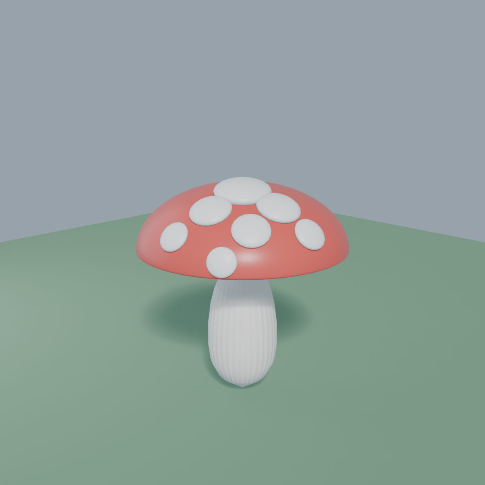
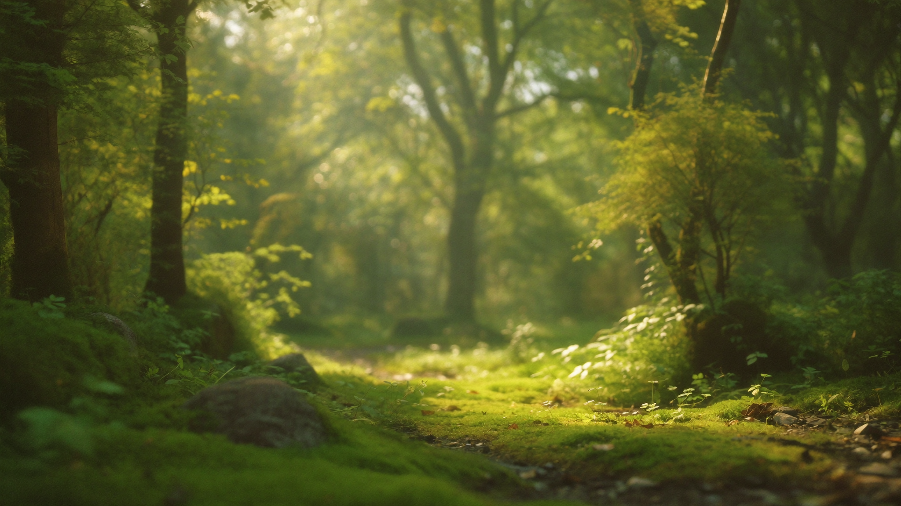
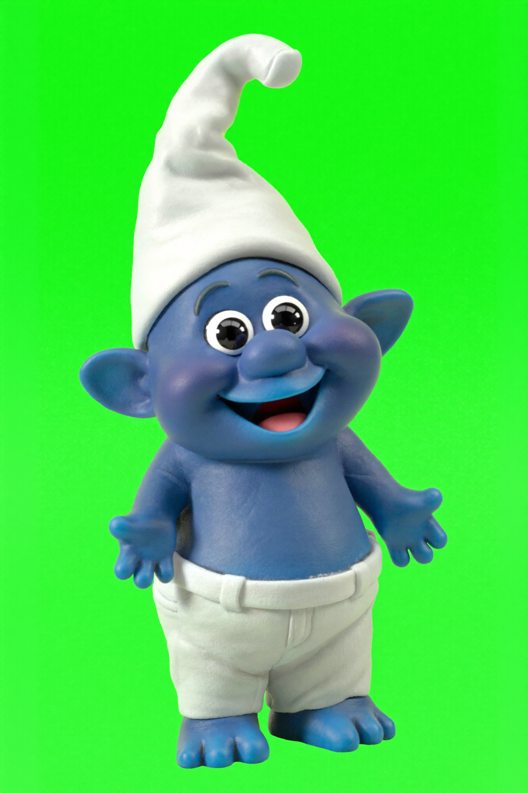
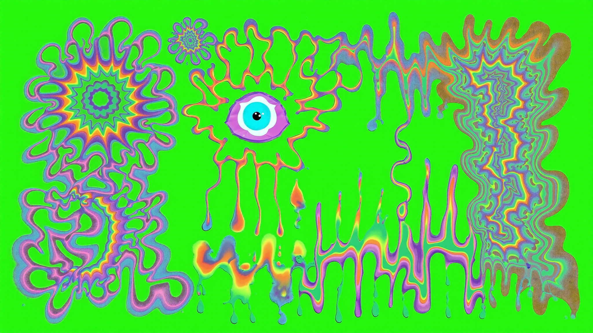

Claude orchestrates Higgsfield (AI image / video / audio) and drops the results straight into After Effects — images, green-screen video, even music — without you ever leaving the chat.
Open the Higgsfield site, type a prompt, wait, download a file, find it, drag it into AE — for every single asset.
Background, character, overlay, video, audio… each one a manual round-trip. Iteration is slow and breaks your flow.
The AI lives in a browser. The comp lives in AE. Nothing talks to each other.
Claude calls the Higgsfield CLI to generate the asset, downloads it, and imports + positions it inside your live After Effects project automatically. No browser, no file hunting, no manual import — the AI factory and the editing canvas become one continuous pipeline driven by plain language.
The orchestrator — reasons, prompts, runs commands, scripts AE
AI factory — images, video & audio from a prompt
The canvas — assets land in your comp, ready to composite
A lightweight bridge lets Claude run ExtendScript inside AE — so importing, scaling, layering and keying all happen programmatically.
Everything below is the real output — embedded straight from this session.

Modelled, shaded and lit in Blender by Claude, exported to GLB, and imported into AE as a native 3D layer with the Advanced 3D renderer.

A dreamy enchanted forest, generated from a text prompt with Soul V2 at 16:9 to match the comp — auto-scaled and placed as the bottom layer.

A blue cartoon gnome generated on a chroma-green backdrop — imported on top, sized to stand in the scene, ready to key with Keylight.

Trippy swirls, melting drips and an eyeball — prompted to avoid green so it survives the key, ready as a Screen-blended hallucination layer.
The still overlay was fed to an image-to-video model and brought to life — warbling, rippling motion — then auto-looped across the comp via Time Remap.
15 seconds of full-on psytrance — 145 BPM, acid leads, rolling bass — generated from a prompt and dropped onto the audio track. Play it:
The entire proof of concept — images, video and music — cost roughly ~5 credits total.
From an empty comp to the finished tripping-smurf scene — every generation, import and key, captured as a timelapse of the real session.
Background, character, psychedelic warble and psytrance — all AI-generated, composited in After Effects. Press play:
Higgsfield makes the pixels. After Effects shapes them. Claude makes the two feel like a single tool.
Claude × Higgsfield × After Effects — a generative pipeline you drive by just talking.